Introducción
La transición y globalización en el sector moda se hace más exigente en cuanto a la exploración y comprensión en el desarrollo de las prendas, buscando mejoras en el ajuste, horma, confort, materiales y tecnología de punta, lo que permite que los productos comercializados por las empresas del sector moda y confección atiendan las necesidades y requerimientos de la industria.
En la actualidad, el sector confección, diseño y moda está haciendo la transición a nivel país en la preparación y capacitación de mano de obra calificada y tecnología versátil que aporte al estándar competitivo internacional, con la que busca dar una respuesta rápida y eficaz a las exigencias del mercado; en este aspecto el patronista juega un papel fundamental, pues debe estar preparado para interpretar los bocetos, sketch y diseños asignados por el diseñador, cumpliendo a cabalidad con los procesos de producción o prototipado necesarios.

1. Patronaje interpretación de modelos
En la industria se identifican diferentes niveles de complejidad en la producción y el desarrollo de prendas de vestir, en la que se hace notoria la exploración y el dinamismo en las prendas; la arquitectura sobre la estructura del cuerpo ha tomado fuerza, permitiendo desarrollar prendas con ajustes o ilusiones ópticas que fortalecen el desarrollo del diseño, hoy por hoy no basta con hacer patrones base, se hace necesario experimentar, explorar y generar siluetas desde cualquier línea de producción.
El éxito de un patronista en el desarrollo de moldes corresponde únicamente a la comprensión del cuerpo, de su funcionamiento y de la manera de vestirlo o cubrirlo, para esto es necesario partir del conocimiento técnico, funcional y no comercial.
El fortalecimiento técnico de un patronista se da en la práctica, para ello se han realizado una serie de explicaciones teórico-prácticas que permiten experimentar y explorar el desarrollo de siluetas y volúmenes aplicados en las prendas.
Es necesario tener en cuenta para la ejecución del presente componente en sus líneas.XXXXXX:
Para realizar cualquier tipo de interpretación, plano, trazo o patrón se recomienda tener en cuenta el análisis específico de la prenda, en este caso los planos de referencia del manual:
Tipo de prenda.
Características que tiene.
Básico.
Tipo de plano.
Desahogos.
Sistema de cierre.
Sistema de ajuste.
Complementos.
Señalización.
Despiece.
Prototipado.
Cuando se empieza a trabajar el trazo de prendas desde los básicos, los básicos siempre deben ir alineados o aplomados sobre una línea base de construcción, en prendas superiores la línea de aplome o línea base será la línea de profundidad de sisa.

Las proporciones son medidas que se obtienen de una imagen, muestra física, ficha técnica, dibujo plano o diseño, que al hacer un paralelo con los básicos o moldes bases de la línea, silueta o talla que se esté trabajando permite obtener medidas o dimensiones de referencia para el desarrollo o trazo del molde correspondiente al diseño; si bien en ocasiones anteriores se han realizado ejercicios sobre el análisis de proporciones, es importante resaltar que las medidas y el análisis de proporciones varían de acuerdo con el tamaño, diseño, impresión, dibujo, básico y sistema de medida. Las referencias implementadas son ejemplos detallados que usted puede usar como referencia para la elaboración de otros modelos similares.

Con el fin de tener referencias visuales y profundizar cada vez más en la interpretación de prendas, se irá asignando una serie de imágenes para hacer el desarrollo del patrón y el análisis de proporciones bajo el requerimiento real de un cliente.

Se debe tener en cuenta que las medidas implementadas en los videos son solo ejemplos y guías, cada plano o cada uno tendrá referencias diferentes, esto depende del tipo de trazo, elementos o incluso del tipo de lápiz que se trabaje, lo importante es siempre indicar las medidas del cuadro de tallas y las fórmulas referenciadas.
La finalidad del ejercicio es poder aplicar todo el conocimiento y manejo de conceptos adquirido hasta el momento, llevando la implementación de los básicos a diferentes tipos de prendas y líneas de producto.
1.1 Manga sastre
Para hacer el desarrollo de una manga sastre se debe tener en cuenta la posición anatómica del brazo y cuál es el objetivo principal de la manga.
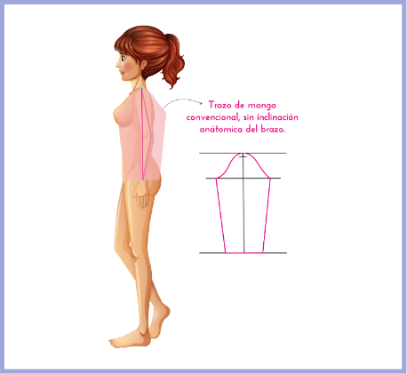Cuando se habla de prendas sastre se hace referencia a todas aquellas que permiten o fortalecen una buena postura sobre el cuerpo, en este caso la manga sastre lleva la inclinación anatómica del brazo, es decir, desde el plano se genera una serie de pinzas que permiten tener en la prenda o en la manga la forma anatómica del cuerpo.

En el manual de patronaje básico SENA se identifican varias formas o explicaciones metodológicas para trazar una manga sastre, es importante tener en cuenta que cualquiera de los pasos o métodos aplicados lleva al mismo punto, en este caso a una manga sastre - funcional.
En la página N°27 del manual (Línea femenina) se identifica el trazo de una manga sastre con una serie de cortes y traslados que reciben el nombre de una hoja ancha o cimera y una hoja angosta o bajera.
En la página N°44 del manual (Línea femenina) se identifica el trazo de una manga sastre con una explicación diferente o con unos pasos diferentes al anterior, se debe tener en cuenta que el resultado sin importar los pasos o la técnica que se utilice al final va a ser el mismo, la única diferencia son las variaciones en los cortes que corresponden al diseño.
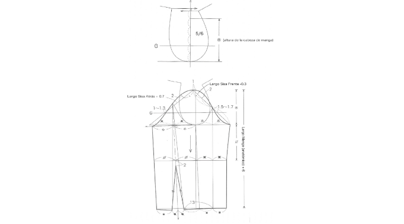En la página N°46 del manual (Línea femenina) se identifica otro tipo de trazo para el desarrollo de una manga sastre, es importante mencionar que en todas se identifica una hoja ancha y una hoja angosta que corresponde a cimera y bajera.

En las páginas N°74 y 77 del manual (Línea masculina) se identifica otro tipo de trazo o explicación para el desarrollo de la manga.

El objetivo principal de esta introducción es identificar que sin importar el tipo de trazo, explicación o metodología, la funcionalidad y el objetivo principal de la pieza, en este caso la manga sastre, debe ser el mismo. Cubrir el brazo dando la forma anatómica del cuerpo.
1.2 Trazo de chaqueta sastre masculina
Cuando se habla de prendas sastre, específicamente de la chaqueta sastre masculina, se debe tener en cuenta que el enfoque principal va hacia el ajuste y horma, en masculino el volumen o el ajuste de pinzas se trabaja hacia la parte posterior, teniendo en cuenta que el ancho de espalda es uno de los puntos más protuberantes en la parte superior de la silueta masculina.
En el manual de patronaje básico SENA se identifica como punto de partida en la página 71 el trazo base para la chaqueta sastre masculina, el cual consiste en un básico con ciertas modificaciones o traslados de los puntos base del cuerpo, para obtener una mejor forma y ajuste sobre la estructura o silueta característica de las prendas sastre.

Para el trazo de una chaqueta sastre en las páginas 73 y 76 del manual de patronaje básico SENA se identifica una serie de tener en cuenta que en masculino no solamente se trabaja por silueta sino por ocasión de uso, es decir, que cada prenda o cada diseño tiene unas especificaciones diferentes, a nivel general, se puede categorizar la finalidad de la prenda por:
Características
La cantidad de botones.
El ancho de la solapa.
La forma en la división del cuello y solapa.
El ancho de una tapa de bolsillo.
La forma de una boca de bolsillo.
Los ribetes.
El canto o la forma del largo.
El forro.
Los acabados en las partes internas de la prenda.
Incluso, hasta la cantidad de aberturas o cajas corresponden o suplen necesidades diferentes.
Las siguientes imágenes muestran el modelo de la prenda a desarrollar:

Teniendo en cuenta el básico superior, podrá observar en el siguiente video ejemplo de referencia, cómo usted debe analizar y proceder a aplicar la talla según el cuadro de tallas del manual y las respectivas fórmulas mencionadas en este video:
1.3 Interpretación de chaqueta bomber
En el desarrollo de productos para la línea masculina se identifican diferentes tipos de variaciones, dependiendo el costo de producción o línea de venta, En esta ocasión se va a realizar el desarrollo de una chaqueta bomber, si bien la chaqueta bomber es una prenda informal su origen es reciente, pues se creó en la industria militar para el uso de los pilotos de combate, con el fin de brindar en su funcionalidad la flexibilidad necesaria para los movimientos del cuerpo, con su evolución puede ser categorizada dentro de un rango de prendas casuales en las tres líneas (masculina, femenina e infantil).
El proceso de patronaje debe garantizar un alto nivel estándar de calidad en la empresa, lo cual incida en la satisfacción del cliente sin incurrir en altos costos de producción que disminuya las metas, afectando la productividad y ganancias de la organización. El modelo bomber se concibe como una chaqueta ajustada y a nivel de la cintura; por eso en esta ocasión se trabajará el desarrollo de la chaqueta partiendo desde una base sastre y no desde una base normal.
A continuación puede analizar las imágenes de la prenda y posteriormente el desarrollo en el video:

1.4 Chaqueta sastre femenina
En el desarrollo de prendas femeninas se identifica gran variedad de productos, en el comercio existen diversos nombres para referirse a las prendas, la chaqueta sastre es una prenda formal utilizada en general por la mujer ejecutiva. Las características principales de una prenda sastre femenina corresponden al aplome, forma y ajuste sobre el cuerpo; sin embargo, se presenta diversidad en el modelo de chaqueta, variedad de largos, variación en cuellos, escotes, bolsillos, mangas, así de la misma manera, se nombran o categorizan como prendas sastre.
El siguiente análisis se hará en una chaqueta sastre clásica femenina, teniendo en cuenta una imagen conforme a lo mencionado anteriormente, es un solo modelo de este tipo de prenda, con el fin de tomar un referente visual para contextualizar y hacer el desarrollo del patronaje con las características mínimas que debe tener una prenda sastre superior.
Para el desarrollo de sastrería femenina a diferencia de la sastrería masculina, no se tiene una base o un básico específico, se trabaja sobre el mismo básico superior industrial desarrollado en ocasiones anteriores.
En las siguientes imágenes y videos usted podrá apreciar y analizar el desarrollo de la chaqueta sastre y así puede realizar los desarrollos de patronaje en otros modelos similares de chaquetas.
1.4.1 Trazo manga chaqueta sastre femenina
Para el trazo de una manga sastre se debe tener en cuenta las características de forma, no solamente de la manga sino del comportamiento o diseño, en este caso se está trabajando sobre una imagen en la cual se identifican características específicas como cortes, caja y botonadura, es importante mencionar que no solamente se trabajan estas piezas externas, para hacer el desarrollo desde el patronaje y pasar al proceso de confección o ensamble se desarrollan piezas internas como borra flojos, refuerzos, entretelas, falsos y forros.
En este punto se tienen claras las generalidades para el trazo de una manga sastre; sin embargo, hace falta fortalecer las piezas internas para la elaboración de esta.
Para el trazo o desarrollo de la manga recuerde tener en cuenta el análisis de proporciones y el trazo de la interpretación de chaqueta sastre femenina.
1.4.2 Despiece chaqueta sastre femenina
Las características de la prenda planteadas como el tipo de acabado en su parte interna inciden en el despiece, por ejemplo, debido al clima cambia sus componentes internos, sobre todo lo relacionado con el textil usado, esta es información valiosa para el patronista en el desarrollo del patronaje.
En el caso a desarrollar se hace el despiece de una chaqueta sastre completamente forrada, es importante aclarar que existen diferentes formas de hacer los acabados internos o refuerzos que va a llevar la chaqueta, cada empresa o cada maquila tiene una forma diferente de producción y acabados, todo se debe hacer siempre bajo el requerimiento de la empresa, teniendo en cuenta la mano de obra y maquinaria con la que se cuenta.
El desarrollo de los moldes de refuerzos, entretelas y forros, al igual que las mangas, son elementos internos, no apreciables en dibujo plano o imágenes, pero de igual forma se deben contemplar. Para la prenda a trabajar se explican las generalidades industriales en el desarrollo de la prenda; sin embargo, encontrará diferentes tipos de necesidades o requerimientos en la industria.
Para el trazo o desarrollo del despiece de la chaqueta sastre recuerde tener en cuenta el trazo de la interpretación de chaqueta y manga sastre femenina.

1.5 Chaqueta cuello alto (traslados de pinza)
En el desarrollo de prendas, la exploración y experimentación en el traslado de pinzas, generación de cortes, eliminación de líneas o puntos claves de eje de rotación del cuerpo, permite tener una visión más amplia sobre el desarrollo y la elaboración de la prenda; este tipo de ejercicios fortalecen el conocimiento de un patronista aumentando su nivel de comprensión y desarrollo en la dificultad de la elaboración de las prendas.

Con el fin de desarrollar el modelo en la siguiente imagen podrá analizar la prenda, y con el video obtendrá las herramientas necesarias para realizar el patronaje:
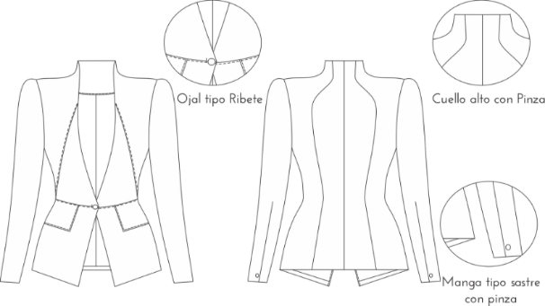1.6 Abrigo asimétrico
El modelo a desarrollar requiere un mayor volumen en el textil dado por el cruce, es necesario analizar las proporciones requeridas; el nombre a un lado en el delantero será diferente del lado contrario. Para el modelo a trabajar la asimetría se da en el largo, observando en la imagen el lado más largo y el más corto y su diferencia, así mismo, los detalles como el cuello, el sistema de ajuste y vuelo, además del cruce de botones y bolsillos para iniciar la construcción se facilitan con el plano abierto en el delantero para identificar y trazar la asimetría del modelo.
Teniendo en cuenta la prenda a analizar, existen variaciones del diseño, se muestra la siguiente imagen como modelo para la explicación en el video:
1.7 Generalidades de pantalón sastre masculino – interpretación

El diseño clásico de la prenda desarrollada en Inglaterra dio gran relevancia a los sastres en los años 30; la sastrería convertida en arte posicionó el traje de un caballero conformado por la chaqueta y el pantalón, como el pantalón sastre fue desarrollado en Inglaterra en donde el arte de la sastrería tuvo un auge posicionando, el traje masculino comprendido por la chaqueta y el pantalón se convirtió en la prenda de uso exclusivo de los caballeros en los años 30. Su elaboración sigue siendo de especial cuidado y dificultad en su producción; los sastres italianos y franceses se sumaron para confeccionar este tipo de prenda, de acuerdo con el avance de la maquinaria y crecimiento de la industria hoy por hoy; los pantalones sastre masculinos siguen manteniendo sus características clásicas, proporcionando elegancia y distinción en el vestir de los hombres.
A continuación, según las imágenes presentadas, usted podrá tener una guía para desarrollar esta prenda:


Con el siguiente video obtendrá los elementos para analizar y desarrollar los modelos de pantalones tipo sastre:
1.8 Interpretación de pantalón sastre femenino
El traje femenino concebido inicialmente por chaqueta y falda, conforme a los cambios sociales y culturales de la década de los años 60 dio paso a la normalización de su uso en las mujeres trabajadoras; hoy por hoy sigue siendo una prenda de uso en el trabajo de oficina, pero igualmente preferida por su estilo, elegancia y confort.

Para la construcción del patronaje usted puede apreciar la prenda en la siguiente imagen y se apoyará en el video para su desarrollo:
1.9 Generalidades de manga kimona y ranglan

Para hacer el desarrollo de una manga kimona o una manga ranglan se debe tener en cuenta que este tipo de prendas eliminan el corte o el eje de rotación anatómico donde se unen las extremidades superiores (brazo) con el tronco, esto quiere decir que se debe generar cierto tipo de amplitudes o desahogos que permitan tener movimiento sin ningún tipo de inconveniente.
Teniendo en cuenta la prenda a analizar, existen variaciones del diseño, se muestra la siguiente imagen como modelo para la explicación en el video:
En el manual de patronaje básico SENA se identifican varias formas o explicaciones metodológicas para trazar este tipo de mangas, es importante tener en cuenta que cualquiera de los pasos o métodos aplicados lleva al mismo punto funcional.
La presente introducción clarifica la metodología de la construcción del patronaje y la funcionalidad de la prenda, en ambas mangas busca cubrir el brazo permitiendo facilidad en el movimiento.
1.9.1 Interpretación de prendas con manga kimona y ranglan
Para interpretar estos dos tipos de manga se puede remitir al manual de patronaje SENA, páginas 48 a 50, además con las imágenes comprenderá sus similitudes y diferencias, y en el siguiente video podrá construirlas:

1.10 Análisis e interpretación de capas
Se presentan tres variaciones de capas para trabajar este tema, con el fin de entender los tipos que se pueden desarrollar para aplicar las construcciones de patronaje adecuadas, teniendo en cuenta el vuelo de la capa, cómo se trabajan las faldas semirotondas y rotondas, y ajustando y aplicando pinzas en el caso requerido.
En las siguientes imágenes puede analizar y comparar los tipos de capas:

A continuación, puede conocer el desarrollo de los tres tipos de capas de los ejemplos en el siguiente video:
1.11 Análisis e interpretación de pantalón sudadera
Se presentan tres variaciones de capas para trabajar este tema, con el fin de entender los tipos que se pueden desarrollar para aplicar las construcciones de patronaje adecuadas, teniendo en cuenta el vuelo de la capa, cómo se trabajan las faldas semirotondas y rotondas, y ajustando y aplicando pinzas en el caso requerido.
En las siguientes imágenes puede analizar y comparar los tipos de capas:
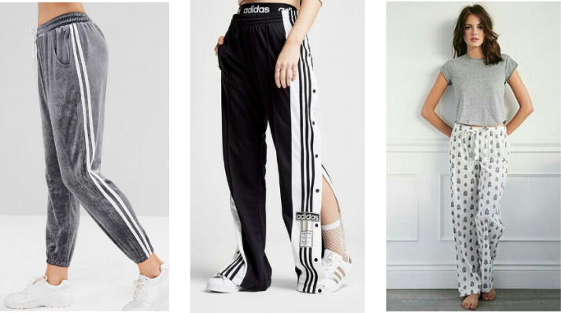A continuación, puede conocer el desarrollo de los tres tipos de capas de los ejemplos en el siguiente video:
2. Patronaje línea interior y deportiva (Software de patronaje)
Cuando se habla de ropa interior y deportiva se hace referencia a todas las prendas del universo de vestuario Under Wear y Leasure Wear, va enfocado principalmente a prendas de vestir que son elaboradas en un gran porcentaje en tejido de punto; sin embargo, en algunos casos se implementan tejidos planos, dependiendo del requerimiento del diseño.
Historia de la ropa interior
El ser humano desde sus inicios utiliza indumentaria para cubrirse tanto del frío como del pudor, de ahí se empieza a utilizar diferentes materiales para la elaboración de prendas de ropa interior, como el algodón, el cuero y el lino, que son algunos de los primeros materiales que se utilizaron.
Antigüedad
El primer material utilizado fue las hojas de un árbol llamado higuera, posteriormente se cubrían con el cuero de los animales.


Evolucionando a través del tiempo
La ropa interior era la única vestimenta que utilizaban los hombres. Definían esa parte de su cuerpo para protegerse de las inclemencias climáticas.
La lencería inicia principalmente su desarrollo en la antigua Grecia, Roma y Egipto, donde las mujeres empezaron a utilizar prendas que pretendían tapar sus zonas púdicas, para que los hombres las vieran con mayor respeto.
La ropa interior en la época clásica no solo cubría las partes más íntimas, sino que determinaban su estado civil y posición social.
Egipto
Las coloraciones, telas, materiales y movimiento de los plises de cada túnica egipcia representaban el rango que se ocupaba en la sociedad.

Grecia
Zóster ceñidor era una banda larga de paño o lino que se ataban las mujeres en la cintura para resaltar su figura o feminidad. Fue signo de obscenidad, al rendirle culto al cuerpo exponían sus senos sin pudor, amamantaban y se cuidaban después de dar a luz para retornar a sus actividades sociales y deportivas.
Roma
Las mujeres en la parte inferior utilizaban algo similar al subligaculum o calzoncillo masculino, su forma era muy parecida a las actuales bragas. Mastodeton era una especie de banda que aplastaba el busto.

Medioevo
El Medioevo fue una época de experimentación de la ropa interior, camisolas y calzones; las bombachas fueron la base de esta vestimenta, imitación del calzón y la malla masculina en las mujeres.
Generalidades para identificar la talla del brasier
Es una concepción un poco ilógica pensar en el hecho de que al ser mujeres no se cuente con la posibilidad de sentirse cómodas; que los senos deben adaptarse a cualquier producto encontrado en el mercado, caso contrario es aceptar que “el brasier debe adaptarse al busto”.
Parece ser una fortuna cuando por casualidad una mujer se encuentra con un brasier que cumpla las siguientes condiciones: que no talle, que no se suba de contorno, que las tiras no se caigan y que no marquen, o que el aro no se marque en la piel y además que no se marque en el escote.
Formas de busto
A partir de lo anterior se debe analizar lo referente a la anatomía, respecto a la existencia de varias formas de busto:
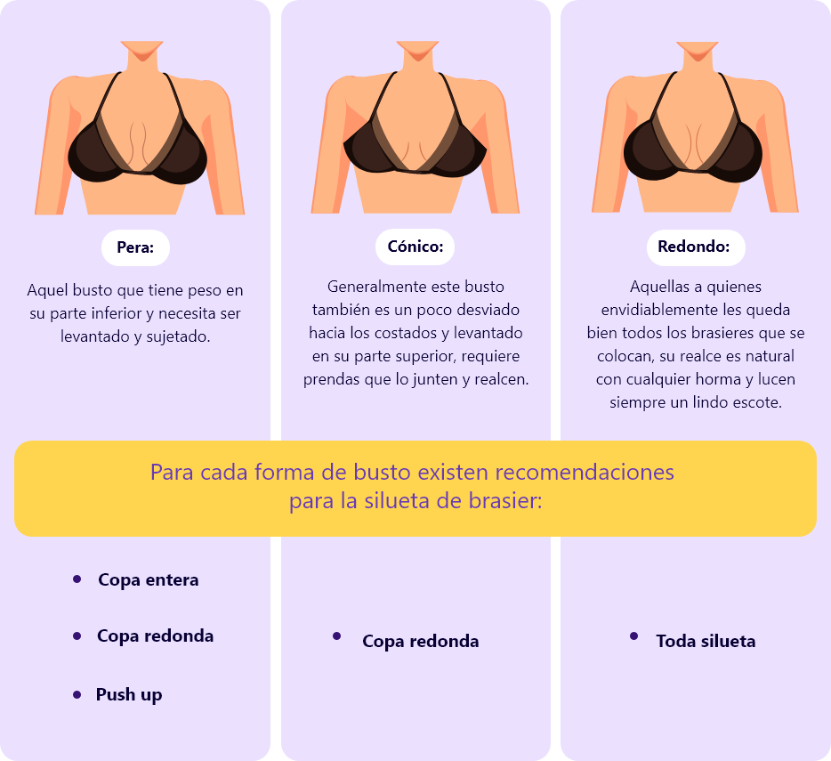
Brasier
Es una estructura y una obra de ingeniería que necesita una excelente base para que exista la posibilidad de sostener un peso (independiente de cuál sea este), recordemos que las tirantas no son las que deben sostener el busto, el busto es sostenido por la estructura o base bien desarrollada.

Contornos
El manejo de los contornos existe porque todas las anatomías son diferentes, incluso en las regiones del país y a nivel mundial todas las mujeres somos diferentes, pero hay que estandarizar y generalizar tallajes preestablecidos, medidas anatómicas mundiales avaladas por entes certificadores que nos generan rangos que van desde la talla 26 hasta la 52, esto nos hace imaginar la variedad de medidas tan grande que existe.
Todo aplicado al cuerpo femenino.

Copas
El peso del busto se conoce como el volumen, para suplir la necesidad de diferencias en el volumen, que es una medida anatómica importante, se clasifican las copas.
¿Cómo se clasifican las copas?
Es normal que para cada volumen exista una copa diferente, desde el menor al mayor volumen, es decir, la AA pasando por la A – la B (que es la copa estándar), la C – la D – la DD – la E hasta llegar a la K, esto es un comparativo para que nos podamos imaginar los diferentes volúmenes de busto que existen.
Cómo colocarse el brasier

Medidas anatómicas
Talla o contorno:
| Talla | Medida de base de busto en cm | Medida en cm del volumen del busto | ||
| A | B | C | ||
| 32 | 68 - 72 | 78 - 82 | 83 - 87 | 88 - 92 |
| 34 | 73 - 77 | 83 - 87 | 88 - 92 | 93 - 97 |
| 36 | 78 - 82 | 88 - 92 | 93 - 97 | 98 - 102 |
| 38 | 83 - 87 | 98 - 102 | 103 - 107 | |
Áreas a medir prenda terminada
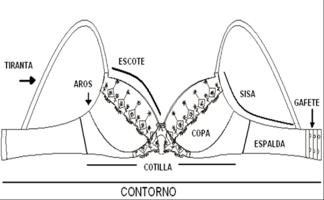Medidas prenda terminada
El referente de medidas a trabajar como base es la talla 34 en copa B, en vista de que es la talla estándar para la línea de ropa interior femenina, en el ejemplo de un brasier con cotilla de silueta corte horizontal se presentan las medidas conforme aparecen en la imagen.
Es importante recalcar que los datos generados dependen del diseño de la prenda y de sus materiales.

Escote: 17 cm
Sisa / espalda: 25 cm
Recorrido de aro: 21.5 cm
Contorno o base total: 64 cm
Tiranta: 42 cm
Varilla lateral: 11 cm
Estas medidas son tomadas de una prenda con aro y con diseño estándar.
Siluetas de brasier
Strapless
Es un brasier de cotilla amplia que brinda una excelente sujeción, sus copas tienen la profundidad necesaria para albergar el busto sosteniéndolo totalmente y ofreciendo el beneficio de no utilizar tirantas, se le puede adicionar elástico siliconado para ayudar la sujeción en sisas o escote, incluso en el contorno, generalmente lleva varillas laterales.

Copa entera
Brasier que sostiene el busto completamente sin ser muy escotado, brindando absoluta comodidad y sujeción, ideal para un busto pesado, puede tener realce, ser prehormado o con corte.

Media copa
Brasier de escote profundo que realza y centra el busto, puede ser con cotilla o con piezas independientes de centro y espalda, especial para busto con forma cónica, puesto que ayuda a ver redondo el busto.
Push-up
Brasier con corte tanto diagonal como inferior para lograr dar profundidad y realce característicos de esta prenda, realza el centro del busto, es ultra escotado con adición de almohadillas para crear mayor realce.

Balconet
Brasier con corte vertical con adición de detalles que embellecen la prenda, como bordados, guipures y tiras con adornos; el corte vertical puede subdividirse en varios cortes y llevar sesgos de terciopelos e incluso varillas en su recorrido de altura de copa.


Descuentos para materiales con elongación para ropa interior
Lo primero a tener en cuenta es que los patrones se trabajan por cuartos de medida si la prenda es simétrica para que sea más práctico el desarrollo de la moldería. El estándar de elongación que se trabaja para un panti en talla M es de 90% a 150%. Para el caso de industrializar la moldería se aplica un porcentaje de descuento del 125% y se descuenta en una cadera estándar talla M, de 96cm de contorno; la siguiente es manera de la aplicación de la fórmula:
Cadera = 96 cm elongación a descontar en contorno cadera 125%.
96cm – 125% = 24
96cm/4 = (96cm contorno de cadera dividido en el número de piezas del patrón para realizar el descuento individual) = 24cm.
24 (resultado del porcentaje) se divide en 4 (número de piezas del patrón) = 6cm.
24cm (cuarto de cadera o 1⁄4 del patrón) se le restan los 6cm del resultado anterior y esto nos da el ancho del cuadro en el patrón, ya con los descuentos del porcentaje promedio para desarrollar el patrón específico base de todos los pantis a desarrollar.
24cm – 6cm = 18cm
Medida para el cuarto del patrón con el descuento del porcentaje.
Con esta medida se comenzarán a trazar los cuadrados con los que se desarrollarán los patrones en talla M.
Los largos de los tiros son medidas estándar, teniendo en cuenta las siluetas de los pantis a trabajar utilizándose las siguientes medidas:
Largo de tiro talla M = 26cm, como estándar de elongación se tiene el 20%
Quedando la fórmula de la siguiente manera:
26cm (largo de tiro talla M) – 20% (elongación de la tela, sentido a lo largo del tejido urdimbre) = 20.8 aproximándolo estandarizamos a 21cm como valor cerrado y vamos escalando según sea la necesidad de la prenda, 2cm hacia abajo y si es necesario hacia arriba.
26cm – 20% = 21cm
Relación de altura de tiro
Cintura: 21 cm.
Cintura baja: 19 cm.
Semidescaderado 17 cm.
Descaderado 15 cm.
Ultradescaderado o pélvico 13 cm.
2.1 Trazo de panti básico
Para el desarrollo del panti básico se trabajarán las siguientes imágenes de referencia.

En el siguiente vídeo encontrará el paso a paso con la explicación para el trazo manual del panti básico.
Recuerde que este es la base o el punto de partida para hacer el otro tipo de interpretaciones en panti.
2.2 Trazo de panti culotte
Para el desarrollo de panti culotte se trabajarán las siguientes imágenes de referencia.
En el siguiente vídeo encontrará el paso a paso con la explicación para el trazo manual del panti culotte.
Recuerde que el punto de partida es el panti básico.
2.3 Hipster con encaje

Para el desarrollo del panti hipster con encaje se trabajarán las siguientes imágenes de referencia.
En el siguiente video encontrará el paso a paso con la explicación para el trazo manual del panti hipster con encaje.
Recuerde que el punto de partida es el panti básico.
2.4 Bóxer con encaje

Para el desarrollo del panti bóxer con encaje se trabajarán las siguientes imágenes de referencia.
En el siguiente vídeo encontrará el paso a paso con la explicación para el trazo manual del panti bóxer con encaje.
Recuerde que el punto de partida es el panti básico.
2.5 Panti faja - cintura alta

Para el desarrollo del panti faja – cintura alta se trabajarán las siguientes imágenes de referencia.
En el siguiente video encontrará el paso a paso con la explicación para el trazo manual del panti faja – cintura alta.
Recuerde que el punto de partida es el panti básico.
2.6 Tanga descaderada
Para el desarrollo del panti tanga descaderada se trabajarán las siguientes imágenes de referencia.

En el siguiente video encontrará el paso a paso con la explicación para el trazo manual del panti tanga descaderada.
Recuerde que el punto de partida es el panti básico.
2.7 Interpretación de tanga encaje
Para el desarrollo del panti tanga de encaje se trabajarán las siguientes imágenes de referencia.

En el siguiente video encontrará el paso a paso con la explicación para el trazo manual del panti tanga de encaje.
Recuerde que el punto de partida es el panti básico.
2.8 Brasier balconet con cotilla
Para hacer el desarrollo del brasier se trabajan diferentes tipos de metodologías, en este caso se entrega el análisis y la interpretación general de un brasier con cotilla, sacando pieza por pieza cada uno de los elementos.

Para el desarrollo del brasier balconet con cotilla se trabajará la siguiente imagen de referencia.

En el siguiente vídeo encontrará el paso a paso con la explicación para el trazo manual del brasier balconet con cotilla.
2.9 Brallette
Para hacer el desarrollo del brasier se trabajan diferentes tipos de metodologías, en este caso se entrega el análisis y la interpretación general de un brasier con cotilla, sacando pieza por pieza cada uno de los elementos.
En el siguiente video encontrará el paso a paso con la explicación para el trazo manual del brasier brallete.
2.10 Interfaz audaces
Para el manejo e implementación del Software de patronaje es necesario acudir a toda la información entregada en los componentes anteriores, frente al desarrollo y elaboración de ropa interior, junto con la implementación metodológica del manual de patronaje básico SENA y demás teorías aplicadas hasta el momento.
Para el trazo de patrones en Software de audaces se referenciará únicamente la línea de ropa interior; sin embargo, cabe resaltar que las herramientas del programa y manejo de la interfaz aplican para cualquier línea, debe tener en cuenta el desarrollo del trabajo manual para aplicarlo de manera digital.
2.10.1 Snap - clásico - automático.
En el siguiente video encontrará el paso a paso con la explicación para la configuración y el manejo de herramientas en el software.
2.10.2 Elemento vrs patrón
En el siguiente vídeo encontrará una contextualización sobre los conceptos que se irán trabajando en el desarrollo y manejo del software.
2.10.3 Elementos básicos de audaces
En el siguiente video se realiza una contextualización sobre la interfaz y el reconocimiento del software.
2.11 Panti clásico
En el siguiente vídeo encontrará el trazo de panti clásico con la misma metodología y teoría trabajada de manera manual, ahora en el manejo del software.

2.12 Interpretación de pantis
En el siguiente video encontrará ejercicios sobre la modificación de la base o panti clásico con la misma metodología y teoría trabajada de manera manual, ahora en el manejo del software.
2.13 Interpretación hipsters
En el siguiente video encontrará ejercicios sobre la modificación de la base o panti clásico con la misma metodología y teoría trabajada de manera manual, ahora en el manejo del software.
2.14 Bóxer masculino
En el siguiente video encontrará el trazo del bóxer masculino con la entrega del paso a paso y metodología del trazo, se hará la exploración desde el manejo del software; sin embrago, se podrá trabajar esta misma explicación de manera manual.
2.15 Pantaloncillo masculino
En el siguiente vídeo encontrará el trazo del pantaloncillo masculino con la entrega del paso a paso y metodología del trazo, y se hará la exploración desde el manejo del software; sin embrago, se podrá trabajar esta misma explicación de manera manual.
2.16 Base superior de ropa interior
En el siguiente video encontrará el trazo de la base superior de la ropa interior con la entrega del paso a paso y metodología del trazo, y se hará la exploración desde el manejo del software; sin embrago, se podrá trabajar esta misma explicación de manera manual.
2.17 Brasier altura de copa
En el siguiente video encontrará el trazo de brasier altura de copa con la entrega del paso a paso y metodología del trazo, y se hará la exploración desde el manejo del software; sin embrago, se podrá trabajar esta misma explicación de manera manual.

2.18 Copa corte vertical y horizontal
En el siguiente video encontrará el trazo de la base copa corte vertical y horizontal con la entrega del paso a paso y metodología del trazo, y se hará la exploración desde el manejo del software; sin embrago, se podrá trabajar esta misma explicación de manera manual.
2.19 Escalado brasier corte horizontal
En el siguiente video encontrará la explicación para el análisis de escalado y programación del software para el manejo de este, debe tener en cuenta la entrega del paso a paso y metodología, esta aplica y se podrá trabajar de manera manual.
3. Operaciones de preparación para elaboración de muestra - tejido plano
Perfil y estilo de consumidor

Dentro del proceso y desarrollo del producto se identifican elementos como aditamentos, pies, guías y fólderes, los cuales permiten tener mejores resultados en el proceso de confección porque aumentan la eficiencia y calidad en las prendas, por ejemplo para el desarrollo de productos en las diversas operaciones que se requieran en la máquina plana, de manera frecuente se presenta el cambio de pies.
3.1 Ruta u orden operacional para camisa
Cuando se habla de ruta u orden operacionales corresponde al paso a paso por operación y con tiempos preestablecidos, desarrollados en una determinada máquina, equipo o de manera manual, con el fin de obtener una prenda terminada, para el caso se cita la camisa. Las operaciones de confección corresponden al desarrollo de movimientos y métodos de costura en la máquina, equipos o exclusivamente manuales, en donde se van uniendo las piezas que componen la prenda para dar como resultado una prenda completamente confeccionada.

Para la confección de la camisa se requiere realizar operaciones según la clasificación analizada, es decir, operaciones de preparación (iniciales, unir piezas por aparte), ensamble, el cual consiste en unir delantero y posterior anteriormente preparado y finalmente las operaciones de terminación, las cuales son especializadas antes del embalaje como por ejemplo colocar botones, planchar o revisar.
Orden operacional de la confección de camisa
Preparación de las piezas
Preparación de cuellos.
Preparación de la pechera, extensión de botonadura o cruce.
Preparación y ensamble del bolsillo.
Preparación o ensamble de puño.
Preparación de espalda.
Preparación de portañuela.

Ensamble de camisa

Preparación de las piezas
Dentro del proceso de ensamble, rutas operacionales y en algunas maquilas, antes de pasar al proceso operacional en las máquinas se hace un proceso de plantillado fusionado y prehormado, utilizando planchas industriales o equipos de fusionado, con el fin de agilizar los procesos de producción o los tiempos de la operación, a nivel de producción se tiene una operaria encargada de hacer solo una operación, es decir, una sola persona se encarga de fusionar, otra se encarga de planchar y otra de marcar o plantillar bolsillos, pecheras y demás complementos de la prenda.
a. Preparación de cuellos
Fusionar el cuello centrando las entretelas sobre la tela del cuello, dejando 1cm de margen de costura por contorno.
Existen diferentes tipos de entretelas, en este caso se sugiere trabajar entretelas que se fusionen con pegamento por el revés de la pieza del cuello. Para activar el pegamento se sugiere trabajar con una plancha caliente o con una fusionadora, además realizar pruebas para conocer el comportamiento de la tela por si se presenta encogimiento. Para las operaciones de costura se utiliza máquina plana o máquinas planas especializadas con montaje de aditamentos que cosen y cortan la rebaba, es decir, el material sobrante.

Coser el contorno a ½ cm en la parte de arriba del cuello, rematando costura al iniciar y al terminar.
Despuntar, desbastar o perfilar la parte de la punta del cuello para afinar el acabado y que al voltearlo guarde simetría.
Voltear el cuello y con la ayuda de las tijeras o con un punzón definir las puntas, cuidando no picar la pieza.

Juntar las puntas y verificar simetría antes de pespuntear el cuello.

Pespuntar al filo del cuello. Esta costura o pespunte puede variar según las especificaciones técnicas a 1/16” o 1/ 4”. Rematar al inicio y al final del pespunte.
Preparación del pie de cuello o banda:
Planchar o fusionar la entretela al pie del cuello vista por la parte de atrás, emparejando desde arriba.

Doblar la parte que quedó sin entretela para hacer el dobladillo del pie de cuello.

Colocar el pie de cuello forro con la vista hacia arriba. Colocar el cuello con la vista hacia arriba. Colocar el pie de cuello vista con la vista hacia abajo.

Verificar que las tres marcas del centro de las piezas coincidan, es decir, cuello con pie vista y pie forro.
Realizar costura del centro hacia las orillas, primero una curva y después la otra, es decir, un lado y volteando el otro lado al derecho.

Planchar la costura del pie del cuello y revisar que los dos pies de cuello queden del mismo tamaño y las dos puntas del cuello.
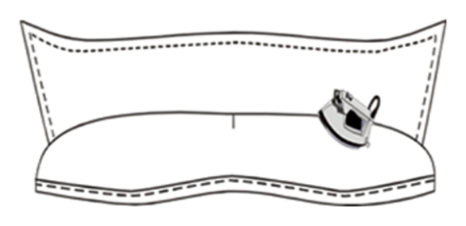Verificar el ancho de puntas y la coincidencia de pie de cuello.
Pespuntar al borde o filo del pie de cuello, el pespunte se realiza a 1 /16” o 1/4 “o según especificaciones técnicas.

b. Preparación de la pechera, extensión de botonadura o cruce
Doblar el delantero izquierdo (planchar) hacia el forro de la tela del lado de la línea del ojal y botón, dejando una costura de 4 cm.

Segundo doblez, planchar nuevamente de 4 cm.

Realizar un pespunte de ½ cm de la orilla del segundo doblez, del lado del delantero. No olvidar rematar siempre al inicio y al final de cada costura.

Desdoblar el delantero y hacer una sobrecostura de ½ cm en la orilla del primer doblez, quedando formada la perilla.
Doblar por la parte de la línea del ojal y botón, al delantero derecho, quedando a 2 ½ cm terminado.
Primer doblez, planchar el delantero derecho y doblar hacia dentro 1 cm, o hacia el forro.
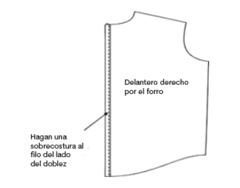Primer doblez, planchar el delantero derecho y doblar hacia dentro 1 cm, o hacia el forro.

c. Preparación y ensamble del bolsillo
Doblar a 1 cm y doblar nuevamente a 2 ½ cm, es decir, donde se hicieron las muescas en la parte de arriba del bolsillo.

Hacer un pespunte al orillo del dobladillo de 2 ½ cm.

Pegar el bolsillo prehormado en los piquetes de la parte delantera izquierda de la camisa, realizando un pespunte a 1 /16“ al orillo del bolsillo y con remate en el inicio y final.

d. Preparación o ensamble de puño
Fusionar los puños vista, posicionando la entretela con el pegamento por el revés de la tela de los puños vista.
Dobladillar 1 cm la parte que quedó sin entretela para hacer el dobladillo.
Colocar el puño forro con la vista hacia arriba. Colocar el puño vista hacia abajo, encima del puño forro.

Coser el contorno del puño, dejando ½ cm de pestaña en la parte de arriba.
Nota:
Rematar al principio y al final de cada costura y coser de la misma manera el otro puño. Si el puño es de puntas redondas tengan mucho cuidado al pasar la costura para que no pierda la forma.
Voltear los puños, revisar que las curvas de los puños queden iguales, un lado contra el otro.
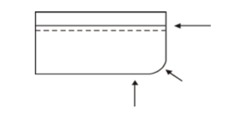Planchar los puños y pasar un pespunte, alrededor de la orilla de los puños para mejor acabado. Este pespunte puede variar según las especificaciones técnicas 1/16“ o 1/4“. Este pespunte regularmente es igual al del cuello.
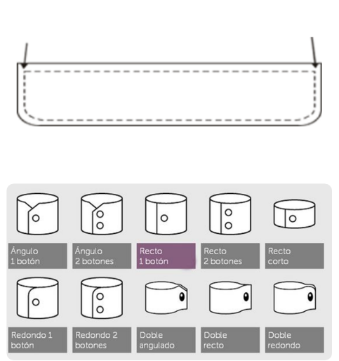e. Preparación de espalda
Pegar marquilla y talla al centro de la almilla o canesú forro por el derecho de la tela.

Canesú o almilla forro con la vista tela hacia arriba
Coser el pliegue o tablón de la espalda.
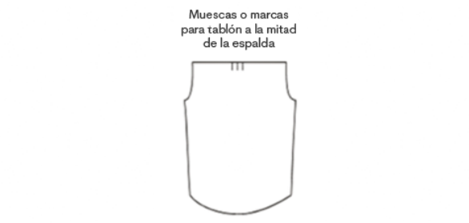Doblar las dos marcas de la espalda.

Cuidar que coincidan con la marca o piquetes del medio, hacer una costura de ½ cm encima del tablón, pliegue o fuelle en la parte alta de la espalda, no olvidar rematar al inicio y al final de la costura.
Colocar el forro de la pieza con la cara (derecho tela) hacia arriba, colocar la espalda con la cara (derecho tela) hacia arriba, colocar la pieza delantera cara (derecho tela hacia abajo).
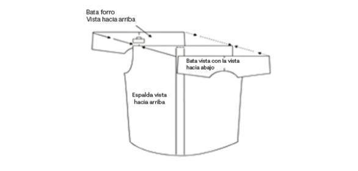Juntar las tres piezas para que queden parejas. Unir con una costura dejando 1 cm de costura , rematando al inicio y al final.
Pespunten pasando la costura en la orilla del canesú.
f. Preparación de portañuela
Doblar y planchar las portañuelas a 1 cm de ambos lados de las aletillas hacia el revés de la tela.
Coser primero manga y portañuela, por uno de los lados planchados pongan la manga con vista hacia abajo, y aletilla vista hacia abajo con una pestaña de 1 cm al pasar la costura por la “y” o marca.
Voltear la portañuela y la manga y hagan sobrecostura al filo de la aletilla, teniendo cuidado que la costura de abajo quede dentro del margen.
Posicionar la aletilla para formar el pico, de tal manera que se identifique aletilla sobre aletilla. Debe quedar el pico de aletilla sobre aletilla para hacer el pespunte. El pico de la portañuela se forma con los dedos, acomodando la parte de inferior con la parte superior se forma el pico. Pasar pespunte al filo u orillo del pico de la portañuela y continuar hasta los 3 cm hacia abajo. Cruzar la aletilla y terminar el pespunte donde empezaron.
Ensamble de camisa
Luego de tener cada una de las piezas por separado, es decir, preparadas, se inicia el ensamble de la camisa, se procede a unir para poder tener la prenda final.
3.2 Ensamble de blusa femenina
En el desarrollo de la confección de la blusa femenina presenta en común varias operaciones con la camisa masculina, es importante analizarlas para relacionar el orden operacional, es decir, qué piezas la componen para unir mediante los tipos de costura acordes con las especificaciones técnicas de calidad, que en muchos casos pueden diferenciar una prenda masculina de una femenina. En esencia, se inicia por trabajar las operaciones de preparación en cuellos, puños, bolsillos y pechera, para luego unir el delantero y posterior, y finalmente realizar las operaciones de terminación, obteniendo la prenda terminada.
Orden operacional de confección de blusa femenina
Preparación de las piezas
Preparación de bolsillo.
Preparación de puños.
Preparación de cuello.
Preparación de pechera, cruce de botonadura o extensión de botones.
Preparación de pinzas.
Preparación de almilla o canesú.
Preparación de portañuela o perilla.
Plantillado de bolsillo.
Ensamble de blusa
A. Preparación de las piezas
Cuando se va a iniciar un proceso de confección lo primero que se debe tener en cuenta es calibrar las máquinas, a nivel general existen puntadas por pulgada (PPP) normalizadas o estandarizadas para ensamblar o confeccionar cada tipo de prenda, se debe tener en cuenta la información entregada en la ficha técnica, esto depende del material y el tipo de costura, se recomienda en esta prenda uso de 10 P.P.P, tanto en costuras internas como externas.
A nivel industrial existen diferentes formas de llevar a cabo un proceso y/o ruta operacional para la preparación y el ensamble de una prenda, en esta ocasión se dará la explicación general para ensamblar una blusa femenina con almilla, pinzas, bolsillo de parche, pechera o cruce de botonadura y cuello camisero.
B. Ensamble de blusa femenina
Luego de tener cada una de las piezas preparadas de la prenda que se va a confeccionar se procede a unir y ensamblar para poder tener la prenda final.
3.3 Ensamble de falda
En la confección de la falda se debe analizar en las operaciones de inicio una de las operaciones críticas como es el sistema de cierre con cremallera como se va a especificar, es importante realizar el alistamiento de los recursos a necesitar como son los hilos, cremallera, piezas cortadas sean en tela y entretela, agujas, pies, guías y demás elementos que aseguren el flujo de las operaciones
Para el desarrollo de la ruta operacional en confección de falda se inicia con las operaciones de preparación, luego se desarrolla el ensamble al unir el posterior y delantero por los costados o laterales, y finaliza con las operaciones de terminados como ojalar, botonar y planchar.
Orden operacional de falda
Preparación de las piezas
Preparación de abertura o caja.
Preparación de pinza.
Preparación de cremallera.
Ensamble de falda
Preparación de las piezas
A nivel industrial existen diferentes formas de llevar a cabo un proceso y/o ruta operacional para la preparación y el ensamble de una prenda, en esta ocasión se dará la explicación general para ensamblar una blusa femenina con almilla, pinzas, bolsillo de parche, pechera o cruce de botonadura y cuello camisero.
A nivel industrial como van avanzando las máquinas y las técnicas de confección se van presentando varios tipos de métodos para desarrollar una prenda, a continuación, se especifica una de ellas:
a. Preparación de abertura o caja
A nivel industrial existen diferentes formas de desarrollar la caja o la abertura de una prenda; sin embrago, se debe tener en cuenta que:
Se puede trabajar la misma técnica de ensamble u operación para el desarrollo de la abertura en cualquier otra prenda.
La abertura no siempre debe ir forrada o entalegada, puede quedar con acabados como fileteadora o sesgo.
b. Preparación de pinza
A nivel industrial existen diferentes formas de desarrollar la caja o la abertura de una prenda; sin embrago, se debe tener en cuenta que:
A nivel industrial existen varias formas para cerrar o confeccionar pinzas, todo va de la mano con el tipo de material, rango de producto y calidad en la confección.
c. Preparación de cremallera
A nivel industrial existen diferentes formas de desarrollar la caja o la abertura de una prenda; sin embrago, se debe tener en cuenta que:
En la elaboración de prendas existen diferentes tipos y formas de pegar la cremallera, todo depende de las especificaciones del diseño, el tipo de cremallera, en algunas ocasiones del tipo de material o tipo de prenda.
Ensamble de falda
Luego de tener cada una de las piezas preparadas de la prenda que se va a confeccionar, se procede a unir y ensamblar para poder tener la prenda final.
3.4 Ensamble de pantalón masculino
La confección de pantalón comprende unir o cerrar en primera medida las piezas como bolsillos, pretina y/o cortes que lo conformen, los cuales hacen parte de operaciones iniciales, dado el caso se une por costado o entrepierna, de esta forma se ensambla el pantalón y finalmente operaciones de terminación como presillar, ojalar, botonar y planchar. Es importante analizar los requerimientos en términos de maquinaria, pies, guías y demás elementos necesarios para su confección.
Para el desarrollo de la ruta operacional en confección de pantalón conforme al diseño y desarrollo del patronaje se construye la ruta operacional adecuada, en la cual se obtenga el pantalón de acuerdo con lo planteado.
Orden operacional de confección de pantalón
Preparación de las piezas
Montaje de cierre, cremallera, corredera o zipper. (aletilla y aletillón)
Preparación de bolsillos.
Bolsillo de ribete sencillo.
Montaje de pretina.
Ensamble de pantalón
Preparación de las piezas
Dentro del inicio de la confección las operaciones iniciales comprenden fusionar piezas como bolsillos, pretinas, además de marcaciones para ubicar bolsillos, las cuales aseguran la calidad del pantalón y aportan rendimiento en el proceso.
a. Montaje de cierre, cremallera, corredera o zipper (aletilla y aletillón)

Para el montaje de una cremallera con sistema de aletilla y aletillón es necesario identificar cada una de las piezas y tener en cuenta que los acabados y los pasos para el ensamble y el desarrollo pueden variar.
b. Preparación de bolsillos
En la elaboración de bolsillos existen diferentes tipos, formas y cantidad de piezas que permiten tener un óptimo desarrollo de la operación, es necesario identificar el tipo de prenda, material y calidad con la que se debe desarrollar la prenda, cada uno de estos elementos varían otorgando más operaciones.
c. Bolsillo de ribete
Existen diferentes tipos de bolsillos de ribete, de igual manera varias formas de confeccionarlos, se debe tener en cuenta que su orden varía dependiendo el tipo de complemento del bolsillo.
Ensamble de pantalón
Luego de tener cada una de las piezas preparadas de la prenda a ensamblar se unen por costados y entrepiernas, y se termina con pegar la pretina y dobladillas de las botas.
3.5 Ensamble de pantalón femenino
El caso del pantalón masculino se asemeja en su mayoría al proceso de confección con algunas diferencias, por ejemplo, el bolsillo lateral, relojero, pretina o el ensamble de la cremallera en la parte del gavilán. Además, en el pantalón femenino por la versatilidad en los diseños, las operaciones pueden variar como es el caso de bolsillos, pretinas, sistemas de cierre (cremallera corriente e invisible).
Una vez se realice el análisis de las operaciones se organizan de tal forma que se clasifiquen en los tres tipos: preparación, ensamble y terminados.
Orden operacional de confección de pantalón
Preparación de las piezas
Preparación de bolsillos.
Preparación de pretina.
Montaje de cierre, cremallera, corredera o zipper (aletilla y aletillón).
Cerrar pinzas.
Ensamble de pantalón

Preparación de las piezas
En el análisis de las operaciones se debe contemplar el análisis del método de las operaciones para tener el método más adecuado para la prenda, en general las operaciones manuales como fusionados, planchados o marcaciones de bolsillo encabezan la lista para el arranque de la confección del pantalón, también se incluyen las operaciones de pegar bolsillos y cerrar pretina, en dado caso se incluye la preparación de pasadores.
Ensamble de pantalón
Luego de tener cada una de las piezas preparadas de la prenda que se va a confeccionar se procede a unir por entrepierna y costado para poder tener la prenda final.
Glosario
Abertura:separación de las partes de algo, dejando al descubierto el interior, hendidura, agujero.
Acabado:los diferentes sistemas industriales para perfeccionar un producto. El acabado en los tejidos comprende el blanqueado, teñido, encogido, estirado, estampado, satinado.
Asimétrico:que no guarda simetría o que carece de ella: figura asimétrica.
Canesú:pieza superior de la camisa o traje a la que se une el cuello, las mangas y el resto de la prenda.
Cruce:línea formando un margen entre el centro y el canto de botonadura.
Dobladillo:pliegue o remate que se hace a la ropa en los bordes.
Eje de simetría:lo que divide una figura en dos partes iguales.
Encarar:poner las telas derecho con derecho.
Ensamble:unir las piezas de una prenda según la secuencia operacional.
Ficha técnica:documento controlado que contiene la información necesaria y pertinente sobre un producto. Se utiliza para determinar parámetros de diseño y estandarizar los lotes de producción.
Flojo:lo que sobra de la tela para embeber.
Fruncir:pliegue en arrugas pequeñas y paralelas.
Fusionar:unir por medio de calor.
Operación en confección:actividad o trabajo que permite agregarle valor y/o transformar un producto.
Pespunte:costura que se efectúa mediante puntadas unidas, volviendo la aguja hacia atrás después.
Secuencia operacional:conjunto de operaciones que en una forma ordenada conllevan a la elaboración de un producto (prenda de vestir).
Material complementario
| Nombre del documento o material. | Tipo de material. | Enlace del Recurso. |
|---|---|---|
| Uso básico – Software Audaces. Recuperado de: Material de formación - Equipo de desarrollo curricular Técnico en patronaje industrial de prendas de vestir - SENA CMTC. | Descargar | |
| Tutorial creado por Nocturno Design Blog. | Web | Visitar |
Referencias bibliográficas
Duarte, N. (1983). Conocimientos básicos de corte. Unidad instruccional No. 3. Servicio Nacional de Aprendizaje.
Gutiérrez, L., Moncayo, A., Tanaka, K., Kimura, F., Moreno, D. (2011). Manual de patronaje básico e interpretación de diseños. Servicio Nacional de Aprendizaje SENA.https://sena-primo.hosted.exlibrisgroup.com/permalink/f/q6j6k0/sena_aleph000025496
Sociedad Americana de Ensayos y Materiales (ASTM). (2003). Textiles. Editorial Staff. [Book]. Sistema de Bibliotecas SENA.
Fotografías y vectores tomados de https://www.shutterstock.com/ y https://www.freepik.es/
Licencia Creative Commons
CC BY-NC-SA
Ver licencia.